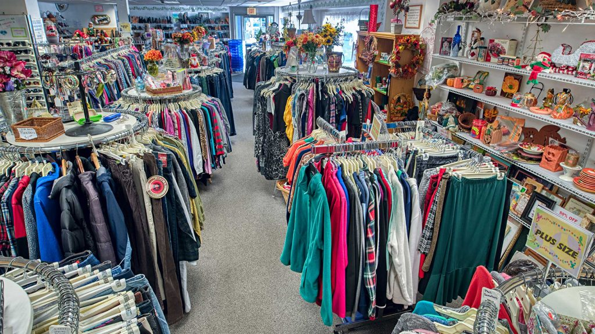

THRIFT SHOP
Aapa Itu Thrift Shop?

Mungkin Anda sering mendengar istilah thrift shop tetapi tidak benar-benar tahu itu apa. Thrift shop adalah singkatan dari dua kata, yaitu thrift yang berarti hemat dan shop artinya berbelanja. Berdasarkan asal katanya, arti thrift shop adalah kegiatan jual beli produk fashion bekas, biasanya berupa pakaian. Namun tak hanya itu saja, barang yang dijual juga bisa berupa produk lain seperti tas, sepatu, dan aksesoris lainnya. Meskipun bersifat bekas, produk fashion thrift shop tetap ramai dicari. Hal ini karena barang thrift shop adalah barang import yang bermerk. Tentu saja harga barangnya mahal jika Anda membeli dalam kondisi baru.
Keuntungan Bisnis Thrift Shop
Adapun keuntungan thrift shop adalah modal yang diperlukan untuk memulai bisnis ini terbilang kecil. Contohnya, dengan modal Rp1 juta Anda sudah bisa mendapatkan satu karung pakaian. Isi satu karungnya bervariatif, biasanya 50 hingga 100 pakaian acak. Anda dapat menghitung modal yang sudah Anda keluarkan dengan banyaknya pakaian yang diperoleh. Dengan demikian, Anda bisa menemukan harga satuan pakaian tersebut. Namun, perlu digaris bawahi bahwa tidak ada jaminan pakaian yang Anda beli berkualitas baik semua, bisa jadi ada yang cacat. Itulah sebabnya Anda perlu memilah-milah barang terlebih dahulu sebelum menjualnya.
Ada beberapa keuntungan bisnis thrift shop lainnya bagi Anda yang ingin menggeluti bisnis ini. Apa saja?
1. Tren, Digemari Anak Muda
Thrift shop adalah tren baru yang sedang berkembang di kalangan anak muda dalam beberapa tahun belakangan ini. Bagi kalangan millennial, pakaian sudah menjadi bagian dari gaya hidup yang perlu dipenuhi. Sehingga, prospek bisnis ini terbilang cukup gemilang.
2. Modal Terjangkau Untung Besar
Jika Anda perhatikan, harga jual produk di thrift shop bisa mulai dari Rp25 ribu. Padahal, umumnya mereka membeli 1 karung pakaian berisi sekitar 50 sampai 100 buah dengan harga Rp 1 juta saja. Mari asumsikan Anda mendapatkan 50 buah pakaian dengan mengeluarkan modal Rp1 juta.
Kekurangan Bisnis Thrift Shop
beberapa kelemahan bisnis thrift shop yang perlu dipertimbangkan sebelum memulai bisnis di bidang ini.
1. Sulit Menemukan Supplier Barang
Pertama, kelemahan bisnis thrift shop adalah kesulitan mendapatkan supplier barang. Thrift shop merupakan pakaian bekas import yang bermerk. Dibandingkan dengan menjual pakaian biasa, mencari supplier barang thrift shop lebih sulit.
2. Kualitas Barang Tidak Terjamin
Barang thrift shop biasa dijual oleh supplier dalam bentuk karungan. Karena sudah disiapkan dalam bentuk karung, pembeli tidak bisa memastikan kualitas pakaian di dalamnya. Akibatnya, rentan ditemukan barang cacat dalam jumlah tidak sedikit. Bisa dikatakan hal tersebut merupakan ancaman bisnis thrift shop.
3. Persaingan Ketat
Seperti tren penggunanya yang meningkat, pelaku bisnis thrift shop juga menunjukkan tren yang sama. Karena tengah digandrungi remaja, ramai orang menjajaki bisnis tersebut. Oleh karena itu, persaingan di bisnis ini terbilang ketat.
Nama : Amanda Mita Kurnia
NIM : 11210251000098